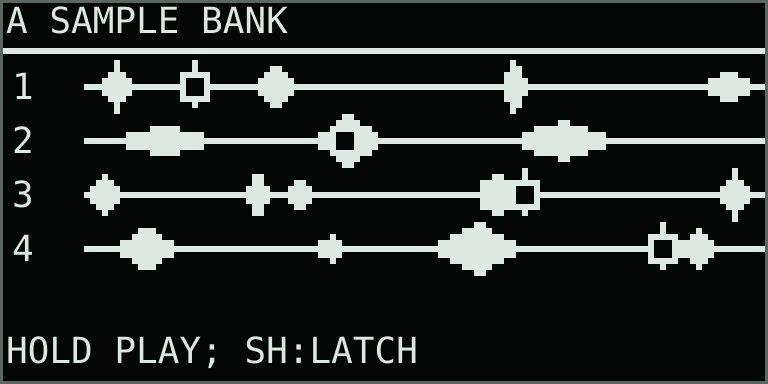
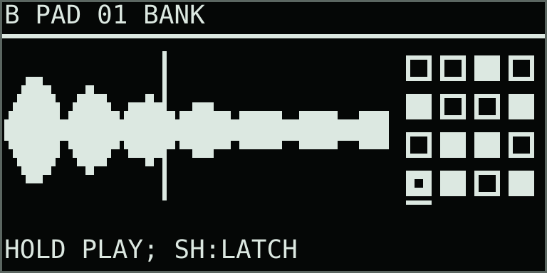
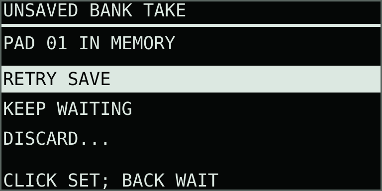
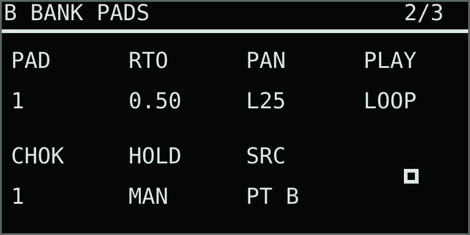
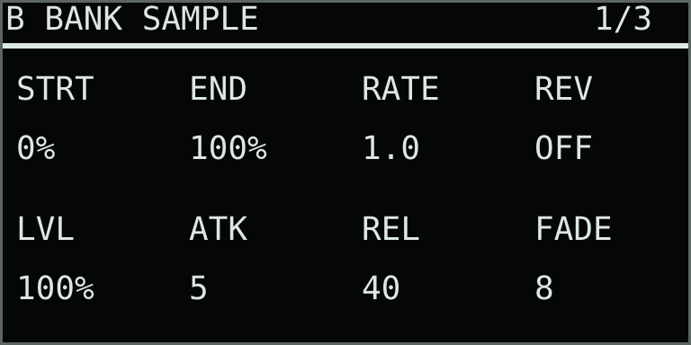

One instrument · sixteen captured samples
Bank mode
Play A on the left half of the pad grid. Capture A, the Bank pads, the main mix or Move’s mic/line input into sixteen independent stereo pads on the right. A uses all four source lanes; each side has four playback voices.
Choose Bank
Open Capture + Menu, choose Mode, select Bank and click. Finish recording before changing mode. Tap Capture to switch A/B editing focus. Track 1–4 selects A’s source lanes while keeping that focus. A keeps its engine and waveform controls; B shows the selected sample, playback cursor and a four-by-four slot overview.


Capture a pad
- On B’s Bank Pads page, choose SRC: IN, MIX, PT A or PT B. Play or latch the material to capture; for IN, select Move’s mic/line input and set its recording level.
- Hold an empty right pad. Its LED turns red while recording.
- Release the pad to finish. Capture ends silently; it does not start playback.
- Wait for saving to finish, then hold the pad again to play its recording.
Bank uses the same four source choices as Mix/Rec. The source is fixed when a take starts; changing SRC affects the next take. Recordings shorter than 250 ms are discarded: the pad stays empty and no take is saved. Takes that stay at or below −90 dBFS peak on both channels are also discarded. This low silence threshold preserves quiet material; ordinary mic noise may exceed it. Accepted takes keep the audio from the initial press, including a short attack followed by silence. Filled pads still play immediately. A brief message explains a discarded take. Each recording is stereo, up to twelve seconds; a full pad finishes automatically. One capture/save runs at a time.
| Display | What it records |
|---|---|
| IN | Move’s selected mic/line input with Thru’s recording gain. Input monitoring can remain off. |
| MIX | The combined instrument mix, including part balance, levels, shared effects and Tape, at the same recording point as Mix/Rec. Input monitoring is excluded. |
| PT A | A after its private effects, before part level, mute and crossfade. This is the default and preserves the previous A source. |
| PT B | Bank’s own playing pads after B’s private effects, before part level, mute and crossfade. A and shared effect returns are excluded. |
Record the Bank pads
Set SRC to PT B, play or latch one or more filled right pads, then hold an empty right pad to record them. Release the empty pad to finish and wait for saving. The original pads keep playing; the new recording stays silent until you trigger it. Select MIX instead to include A and the shared effects.
Recover a failed save
If a take reports Save Failed, its audio remains in memory. Click the main encoder on the waveform page to open the recovery menu. Back also opens this menu when leaving a failed take; while a take is still saving, Back waits for it to finish.

| Action | What it does |
|---|---|
| Retry Save | Request another background save immediately. |
| Keep Waiting / Back | Return to the instrument while automatic retries continue. |
| Discard… | Open a second confirmation, initially set to Keep Take. Confirm Discard to release the pending take. Existing pad assignments, saved recordings and the previous Undo are retained. |
Ordinary exit waits for pending Bank audio. Shutdown also makes one final attempt at saving retained audio if a previous write failed. A forced exit or power loss while storage remains unavailable can still lose an unsaved take.
Play, latch and clear
| Control | Action |
|---|---|
| Hold a filled right pad | With PLAY LOOP, play from the start and loop while held; release starts the envelope release. With PLAY ONE, play through once even after release, with a short fade at the end. |
| Shift + filled pad | Toggle latch. Shift + an empty pad does not start recording. |
| Delete (X) + right pad | Clear the slot. Sounding readers fade out; the archived WAV remains. |
| Curved Undo key | Restore the last capture or clear assignment. |
| Bank Pads | Select a pad, adjust its playback behavior, or choose the recording source. |
Empty pads are dark; filled pads are dim white; recording is red; saving is orange; playing is cyan. Purple indicates an assigned sample that is still being prepared. MIDI channel 2 notes 60–75 play slots 1–16.
Bank Pads controls

| Knob | Display | Range | What it controls |
|---|---|---|---|
| 1 | PAD | 1–16 | Selected pad, without triggering it. |
| 2 | RTO | 0.125–8× | Per-pad playback speed relative to the master RATE. At RATE 2×, a pad at RATIO 0.5× plays at its original speed. Pitch follows speed. |
| 3 | PAN | −100–100 | Per-pad stereo balance: left, original stereo at centre, or right. Changes are smoothed. |
| 4 | PLAY | LOOP / ONE | Held or latched looping, or a one-shot that finishes after key release. Shift + pad can unlatch either. |
| 5 | CHOK | Off / 1–4 | Choke group. A trigger releases other Bank voices in that group using their release envelopes. |
| 6 | HOLD | Manual / 50 ms–60 s | B-wide automatic latch release delay. Manual keeps a latch until it is toggled off. |
| 7 | SRC | IN / MIX / PT A / PT B | Bank recording source, matching Mix/Rec. PT B records the Bank pads themselves. The choice applies to the next capture; existing recordings are unchanged. |
| 8 | Reserved | — | Available for a future control. |
Bank Sample controls

| Knob | Display | Range | What it controls |
|---|---|---|---|
| 1 | STRT | 0–100% | Sample start. B’s waveform zoom follows the selected region. |
| 2 | END | 0–100% | Sample end, after Start. |
| 3 | RATE | 0.125–8× | Master playback speed for every B pad. Each pad’s RATIO multiplies this value. A’s engine speed is independent. |
| 4 | REV | Off / On | Reverse playback through the selected region. |
| 5 | LVL | 0–200% | Sample level before B’s part mixer. |
| 6 | ATK | 1 ms–10 s | Fade-in for each playback note. |
| 7 | REL | 5 ms–10 s | Fade-out after release or unlatch. |
| 8 | FADE | 2–100 ms | Stereo-linked overlap at the loop seam, shortened for small regions. |
Use A/B Blend and the part level, color and rotary controls as in Shared Dual. Capture + encoder 8 remains the global A/B crossfade shortcut.
Saved samples and performance clips
Every capture creates a new WAV in Thru Recordings. Clip slots retain their own Bank sample assignments, per-pad settings, master rate and recording source; copying a clip keeps references to the same recordings. Clearing a pad leaves its archived take available to other clips and the sample library. Wait for the saved acknowledgement before powering off.
The performance recorder captures playing and latched Bank notes together with A. Holding an empty pad to capture audio is not recorded as a playback note. Existing clip and chain transitions can recall and fade Bank performances along with their sample assignments.